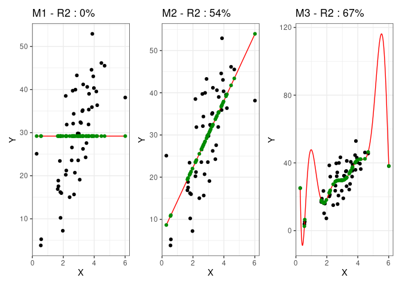
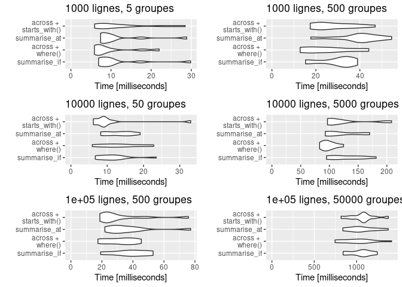

Risques relatifs et odds-ratios : comment les interpréter et les comparer?
Petite présentation des OR et des RR, et ce qu'ils veulent dire.

Petite présentation des OR et des RR, et ce qu'ils veulent dire.
Présentation des enjeux théoriques et pratiques de l'arbitrage biais variance dans la construction d'un modèle de prédiction. 
Présentation du gestionnaire de packages de R

Éléments théoriques généraux sur les séries temporelles et quelques exemples classiques.

Mise à jour de l'évaluation des performances du verbe across dans dplyr version 1.0.6 
Quelques opérations sur les séries temporelles, illustré par une petite étude de cas à bicyclette.
Introduction à la manipulation de données temporelles avec Python
Présentation et exemples d'utilisation de l'ACP en statistiques et data science.

Comparaisons des temps d'exécution de base R, dplyr et data.table sur quelques cas d'étude